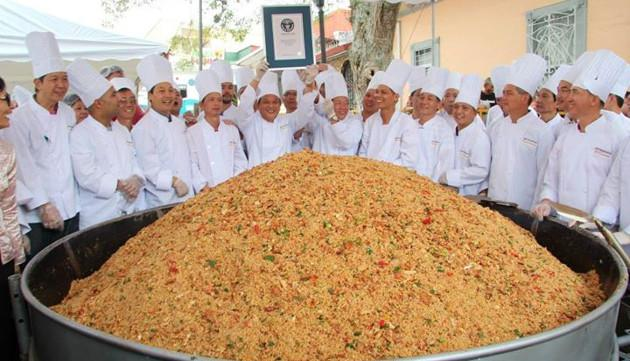

Records
La cebolla más grande

La maleta más grande. China, 15 de octubre de 2006. Medía 175 cm de alto, 115 de ancho y 46 de profundidad.

El tazón de arroz más grande
Costa Rica, 12 de febrero de 2013. El tazón de arroz pesó 1.345,50 kilogramos.

Inglaterra, 16 de septiembre de 2011. Pesó 8.150kg.
Records recientes
|
La bufanda tejida más larga Helge Johansen, de Noruega, tejió la bufanda más larga del mundo y mide nada más ni nada menos que 4.565,46 metros.  |